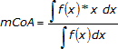
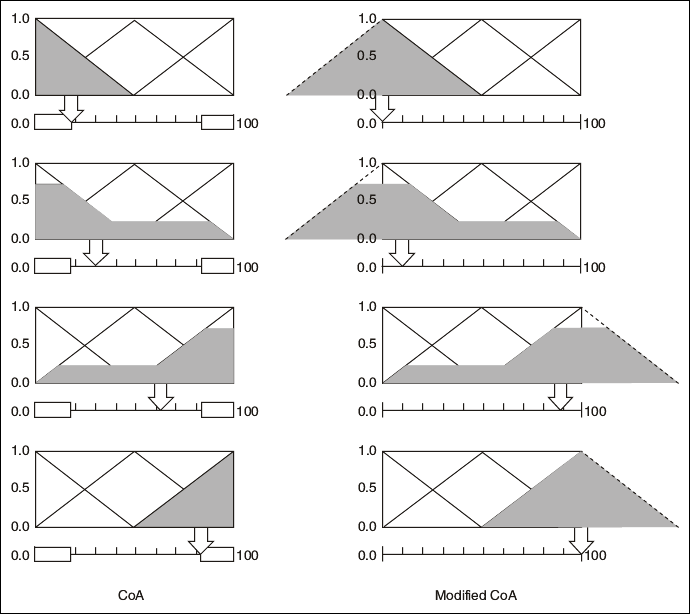

Because the Center of Area (CoA) defuzzification method evaluates the area under the scaled membership functions only within the range of the output linguistic variable, the resulting crisp output values cannot span the full range. To solve this problem, use the modified Center of Area defuzzification method.
The modified Center of Area defuzzification method is similar to the Center of Area defuzzification method. However, the fuzzy logic controller considers the full area under the scaled membership functions, even if this area extends beyond the range of the output variable. The fuzzy logic controller uses the following equation to calculate the geometric center of the full area under the scaled membership functions.

where mCoA is the modified center of area.
The interval of integration is between the minimum membership function value and the maximum membership function value. Note that this interval might extend beyond the range of the output variable.
The following image illustrates the difference between the Center of Area and modified Center of Area defuzzification methods.
